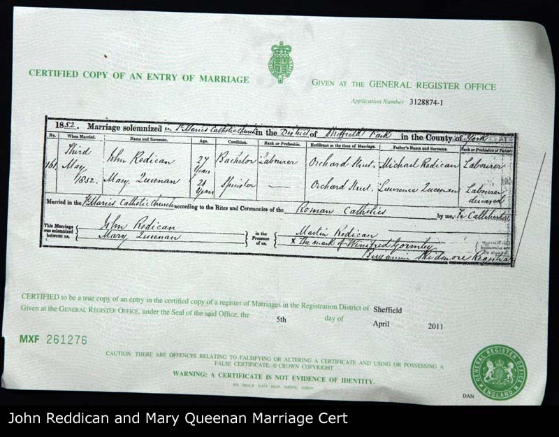
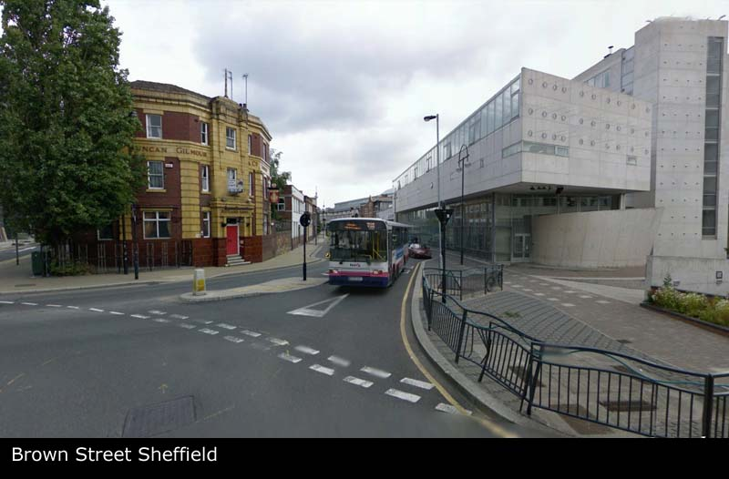
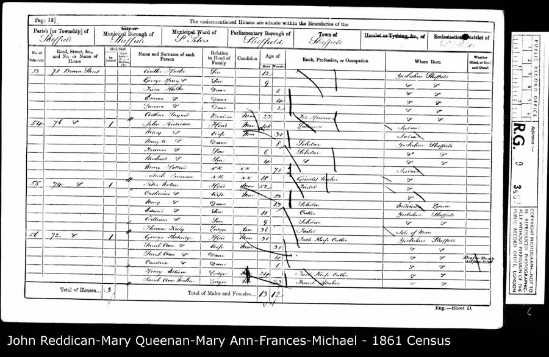
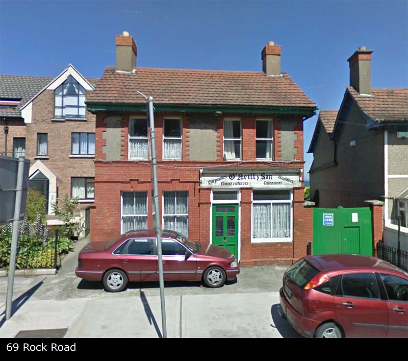
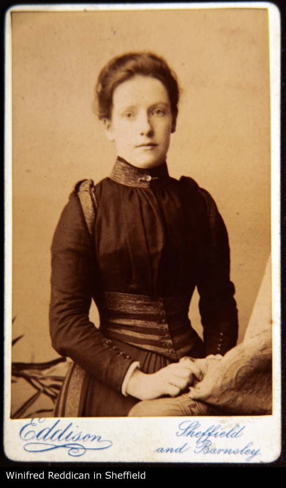
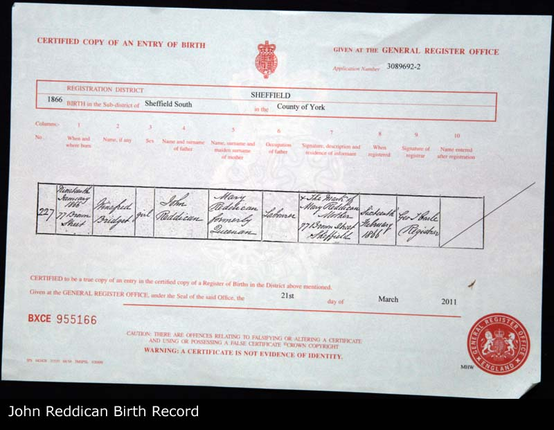

| Name | Full Name | Mary QUEENAN |
| Forename | Mary | |
| Surname | QUEENAN | |
| Sex | Female | |
| Birth | 02/1830, Boyle, Roscommon, Ireland | |
| Death | After 1901 | |
| Parents | Laurence QUEENAN x Maria MCDONOUGH [Family] | |
| Spouse | John REDDICAN b. Between 04/1820 and 1821 [Family] | |
| Children | 1. Mary Ann REDDICAN b. About 1853 2. Frances REDDICAN b. Between 04/1855 and 1856 3. Michael REDDICAN b. Between 04/1857 and 1858 4. Kate REDDICAN b. Between 04/1861 and 1862 5. Margaret REDDICAN b. Between 04/1863 and 1864 6. Winefred Bridget REDDICAN b. 19/01/1866 d. 11/1910 7. John REDDICAN b. Between 1868 and 04/1868 | |
| Change Date | Date | 16/04/2011 |
| Time | 19:37 | |
Mary QUEENAN, eldest child of Laurence QUEENAN and Maria MCDONOUGH [Family], was born in 02/1830 in Boyle, Roscommon, Ireland. Mary died after 1901 aged about 71. She resided in 1830 in Boyle, Roscommon, Ireland. She was baptized on 04/03/1830 in Boyle, Roscommon, Ireland. In 1851 Mary was a in 73 Carver Street, Ecclesall Bierlow, Sheffield, England. She resided in 1851 in 73 Carver Street, Ecclesall Bierlow, Sheffield, England. Mary resided in 1852 in Orchard Street, Norton, Sheffield, England. Mary resided in 1861 in 76 Brown Street, Sheffield, Yorkshire, England. In 1866 she resided in 77 Brown Street, Sheffield, Yorkshire, England. In 1871 Mary resided in 66 Brown Street, Sheffield, Yorkshire, England. In 1881 she resided in 78 Brown Street, Sheffield, Yorkshire, England. In 1891 she was a Domestic Servant in 23 Flora Street, Nether Hallam, Sheffield, England. In 1891 she resided in 23 Flora Street, Nether Hallam, Sheffield, England. In 1901 Mary resided in St Elizabeths Home For Aged Poor, Heeley, Sheffield, England. Mary was born in 1830 in Boyle of parents Laurence Queenan/Quinan and Maria/Mary McDonough. We assume she left Ireland on account of the famine. We cannot currently trace the whereabouts of the rest of her family so it is unsure of whether she travelled to England alone of not. We do know that she was working as a servant in Sheffield by 1851 at the age of 20. She married John Reddican the next year, also from Ireland and by this time her father Laurence has certainly died. Mary lived and worked around the Brown Street neighbourhood and it appears she never learnt to read or write as she signed birth certs with an X. By the age of 40 she was a widow and worked as a servant while living with her daughter Winifred. Her other children all stayed around Sheffield city centre in various homes and employments. She MAY have ended up in a home, St Elizabeth's Home for Aged Poor, Heeley, Sheffield by 1901 at which point we lose trace of her. 3 sons and 4 daughters listed. |  |
| i | Mary Ann REDDICAN1 was born about 1853 in Sheffield, Yorkshire, England. |  | ||
| ii | Frances REDDICAN2 was born between 04/1855 and 1856 in Sheffield, Yorkshire, England. On 07/04/1861 he resided in 76 Brown Street, Sheffield, Yorkshire, England. Frances resided on 02/04/1871 in 66 Brown Street, Sheffield, Yorkshire, England. On 02/04/1881 Frances resided in 75 Ellison Street, Sheffield, Yorshire, England. On 03/04/1881 he was a Agrcultural Fork Maker in Sheffield, Yorkshire, England. |  | ||
| iii | Michael REDDICAN3 was born between 04/1857 and 1858 in Sheffield, Yorkshire, England. Michael resided on 07/04/1861 in 76 Brown Street, Sheffield, Yorkshire, England. He resided on 02/04/1871 in 66 Brown Street, Sheffield, Yorkshire, England. | |||
| iv | Kate REDDICAN4 was born between 04/1861 and 1862 in Sheffield, Yorkshire, England. She resided in 1871 in 66 Brown Street, Sheffield, Yorkshire, England. Kate resided in 1911 in 69 Rock Road, Booterstown, Dublin, Ireland. |  | ||
| v | Margaret REDDICAN5 was born between 04/1863 and 1864 in Sheffield, Yorkshire, England. Margaret resided on 07/04/1861 in 76 Brown Street, Sheffield, Yorkshire, England. On 02/04/1871 she resided in 66 Brown Street, Sheffield, Yorkshire, England. | |||
| vi | Winefred Bridget REDDICAN6 was born on 19/01/1866 in 77 Brown Street, Sheffield, Yorkshire, England. Winefred died in 11/1910 in 69 Rock Road, Booterstown, Dublin, Ireland aged about 44. Winefred was buried on 10/11/1910 in Graves Space 28, Latitude W, Section I1, Deansgrange, Dublin, Ireland. Winefred resided on 19/01/1866 in 77 Brown Street, Sheffield, Yorkshire, England. Winefred was a Servant for the Carvey family in 1881 in 29 Paternoster Row, Sheffield, England. In 1881 she resided in 29 Paternoster Row, Sheffield, England. Winefred resided in 1891 in 23 Flora Street, Nether Hallam, Sheffield, England. In 1901 Winefred resided in 14 Stewart Road, Eccleshall, Sheffield, Yorkshire, England. In 1910 she resided in 69 Rock Road, Booterstown, Dublin, Ireland. |  | ||
| vii | John REDDICAN was born between 1868 and 04/1868 in Sheffield, Yorkshire, England. |  |
1. Lived at 76 Brown Street with parents but in 1871 by the age of 29 her father had died and she has left home. In 1881 she is back with her mother in 78 Brown Street, with John and an uncle Martin from Boyle Ireland (perhaps John Reddican's brother); [Note Record]
2. Frances grew up on Brown Street with his parents and stayed living with his mother after his father had died by 1871. By 1881 was living as a border in 75 Ellison Street and working as a Agricultural fork maker; [Note Record]
3. Grew up on Brown Street with his parents and stayed living with his mother after his father had died by 1871. By 1881 there is evidence of a Michael Reddican married to a Winifred, with 2 kids John Edward and Michael, Living in Oldham. But this Michael says he was born in Ireland? (Winifred his wife from Newport); [Note Record]
4. Kate was born in Sheffield and raised in the Brown Street area. She has left home by the age of 20 and ends up moving to her mothers native Ireland where she marries and settles in Booterstown. Here she is later reunited with her widowed sister Winifred.; [Note Record]
5. Grew up on Brown Street with his parents and stayed living with his mother after his father had died by 1871. By 1881 she had already left home; [Note Record]
6. Winifred was born in 77 Brown Street, Sheffield. Her father died when she was only 5 years old and by 1871 she had moved to 66 Brown Street with her mother and siblings. By the age of 15 she is working as a servant for the Carver family at 29 Paternoster Row (a continuation of Brown Street). By this time the man she later marries, Arthur is lodging a mile or 2 away in Charles Street and working as a carter at the brewery. Winifred married Arthur Hallam between 1891 and 1901 and they move to 14 Stewart Road, Eccleshall, Sheffield, Yorkshire (I fear this may be a car park now) where they start to raise their 3 sons Winifred is widowed in the next 10 year and moved to Ireland where her sister Kate is already living with her husband Thomas O'Neill in 69 Rock Road. 69 appears to be still there as an O'Neills builder/carpenter shop. Although the original house was the left of this shop which is since replaced by apartments.; [Note Record]